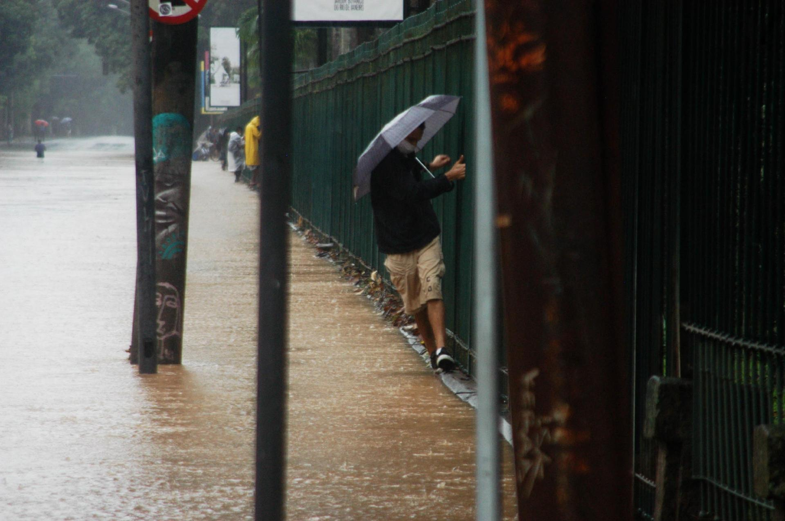

O que enfrentamos?
Combatemos alagamentos urbanos, causados pelo acúmulo de água, lixo e obstruções que impedem o escoamento adequado nos bueiros.


Nossa intervenção
Enfrentaremos o problema com monitoramento em tempo real, alertas preventivos e ações rápidas para mitigar danos causados por enchentes urbanas.